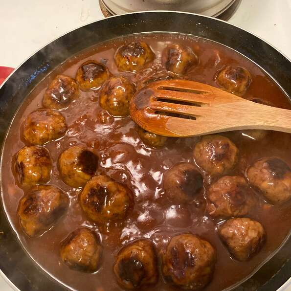

Sweet and Sour Meatballs

Description
I got this recipe from my mother-in-law shortly after I was married. Now it is a favorite of our kids. I like to serve it over rice.
Ingredients
- 1 pound ground beef
- 1 egg
- 1 onion, chopped
- 21 cup dry bread crumbs
- salt and pepper to taste
- 1 cup water
- ½ cup cider vinegar
- ½ cup ketchup
- 2 tablespoons cornstarch
- 1 cup brown sugar
- 2 tablespoons soy sauce
Steps
- In a large bowl, combine beef, egg, onion, bread crumbs, salt and pepper. Roll into meatballs about 1 to 1 1/2 inches in size.
- In a large skillet over medium heat, saute the meatballs until browned on all sides.
- In a separate medium bowl, mix together the water, vinegar, ketchup, cornstarch, sugar and soy sauce. Pour over the meatballs, and allow sauce to thicken. Continue to heat until the sauce just starts to bubble.